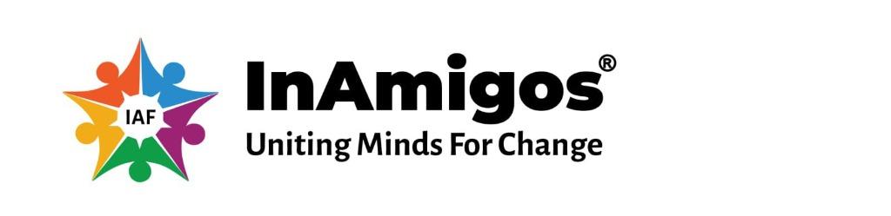
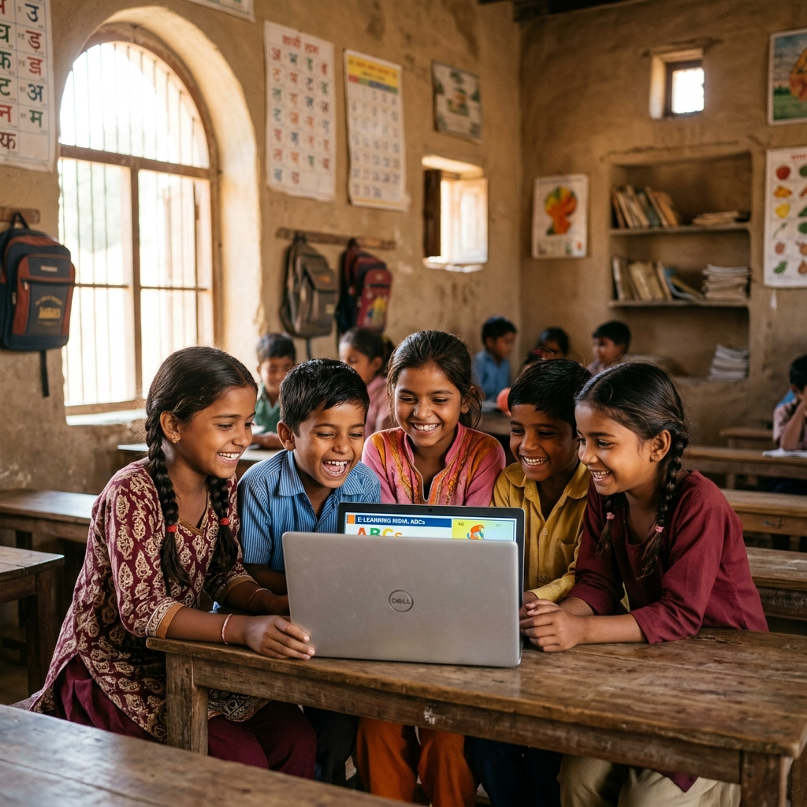
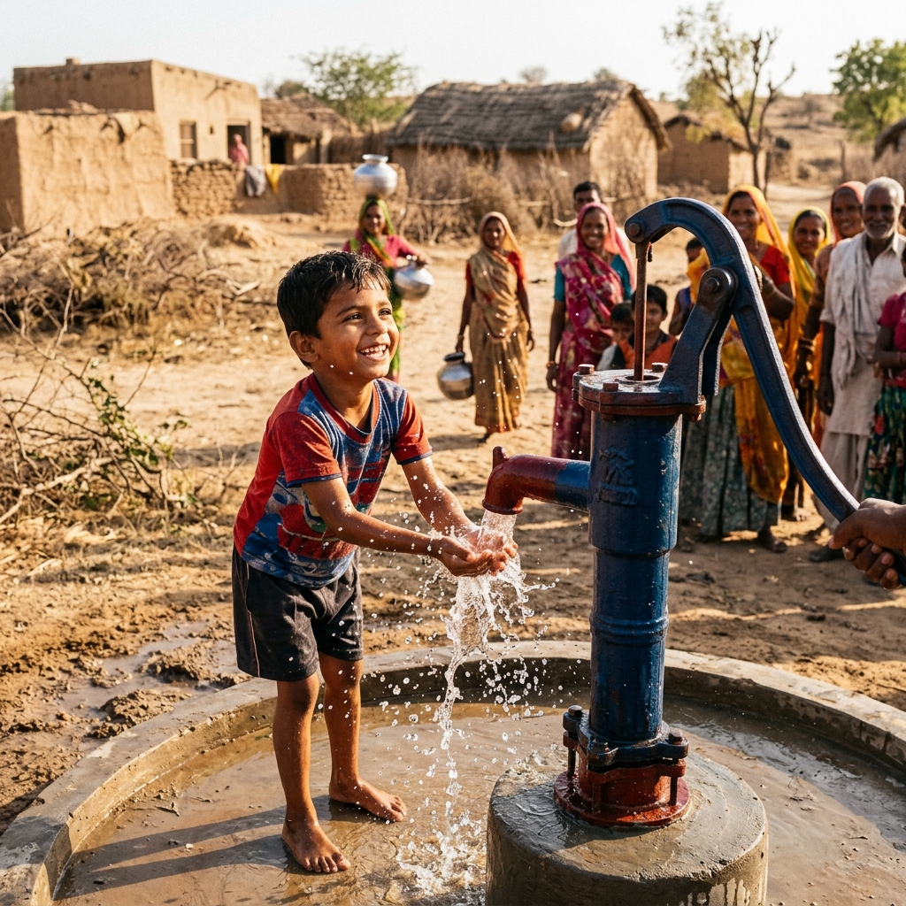
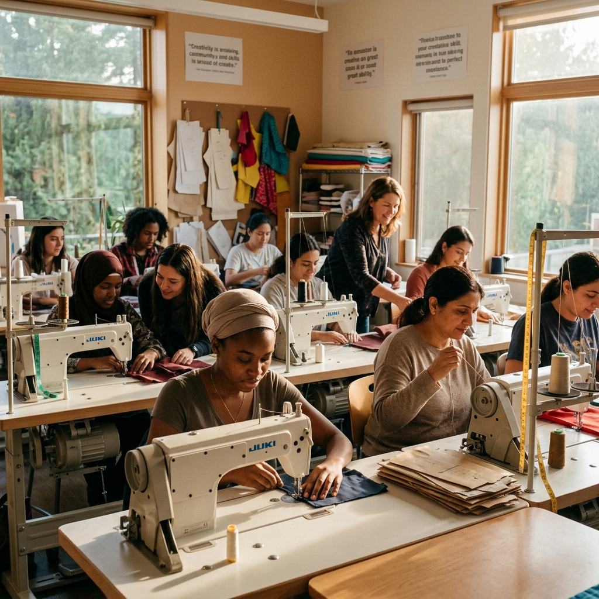

Mockup Studio ConceptPurpose: Establish instant emotional connection, credibility, and brand cause with the visitor.
Design Choices: A high-quality full-bleed photographic background representing community unity, left-aligned typography with orange accents, clear dual CTAs for volunteer onboarding and donation, and a scroll cue to encourage exploration.
We empower underrepresented communities across India through education, sustainable infrastructure, and livelihood programs that create lasting positive change.
Purpose: Maximize average donation amounts and transition one-time donors into recurring monthly supporters.
Design Choices: Pre-selected amount buttons reduce cognitive load. A dynamic outcome calculator converts abstract amounts into real, tangible impacts (e.g. "feeds 5 kids").
Your contribution directly funds meals, education materials, and community infrastructure. We maintain full financial transparency with 92% of donations going directly to program delivery.
Purpose: Build urgency and direct focus toward specific, actionable projects.
Design Choices: High visual cards with custom category tags, detailed progress indicators showing percentage raised, and a countdown timer to build constructive urgency.
Support ongoing projects making real impact in communities

EducationBringing technology education to underserved villages, empowering youth with digital skills for the future.

SanitationInstalling sustainable water pumps and wells in remote communities to provide access to clean drinking water.

LivelihoodSkill development programs teaching tailoring and entrepreneurship to help women achieve financial independence.
Purpose: Build a high-quality community network with zero onboarding friction.
Design Choices: Low fields form layout, pre-defined skill matching fields, and clear social value highlights to prompt user registration in minimal steps.
Donations fund projects, but people bring them to life. Join our coordinate network of volunteers making direct impacts on the ground.
Purpose: Build verifiable trust and combat cynicism concerning charitable transparency.
Design Choices: Dynamic layout featuring verified badge tags, contrasting roles (showing views from donor, volunteer, and direct beneficiary) for a 360-degree validation loop.
Stories from our community members and supporters
"InAmigos gave me the opportunity to learn computers. Now I help my village access government services online."
"Supporting this foundation monthly has been the most rewarding decision. I see real impact in every report they share."
"Volunteering with InAmigos connected me to incredible people working towards genuine change. It's transformative."